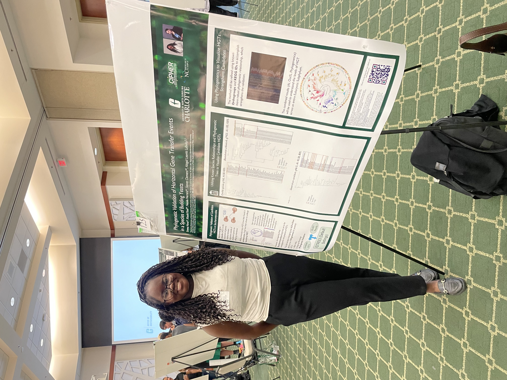

Creating Meaningful Experiences
HUMAN-CENTERED AI • RESEARCH • UX/UI DESIGN • FRONT-END DEVELOPMENT
I design Connection
Projects
View All→
Clarity
AI-powered financial education app that helps teenagers build healthy budgeting and spending habits.
View Project →
Bowtify
Redesigned an AI-powered risk management platform to improve explainability, usability, and user trust through Human-Centered AI design principles.
View Project →
Space Blog
A React-based blog application honoring NASA's Artemis II astronauts. Built collaboratively to create a responsive, engaging experience while strengthening our skills in React, authentication, and modern front-end development.
View Project →My Skills
Research

Horizontal Gene Transfer in Budding Yeast | Spring 2026
Conducted computational biology research validating Horizontal Gene Transfer events using phylogenetic analysis and bioinformatics tools.
View Research →Designing Trustworthy AI Recommendations for Engineers | Coming up
Conducting HCI research focused on designing trustworthy AI and Exploring Human-in-the-Loop interfaces, explainable AI, to improve user trust, and decision-making.